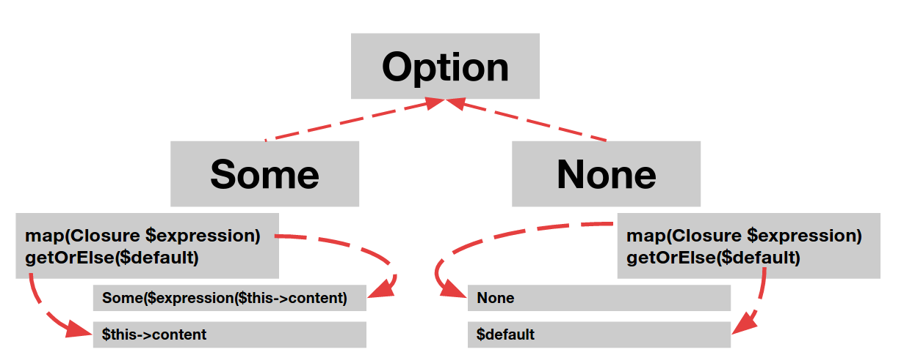

The problem
Have you ever used null?
Do you still use it?
If the answer is yes - STOP IT.
Even inventor of null agrees that null was a bad idea and excused a whole industry for this shortcut that leds thousand of developers around the world to a tons of costly bugs that could be easily avoided.
How this problem usually looks like in a PHP development?
Let's consider an example repository:
public function findByEmail(string $email): ?User
{
return $this->findOneBy(['email' => $email]);
}
Apart from DDD good practices let's create an example controller action using this method.
public function userByEmailAction(string $email): Resource {
$user = $this->userRepository->findByEmail($email);
if (is_null($user)) {
return new Response([], HTTP_NOT_FOUND);
} else {
return new Response($user, HTTP_OK);
}
}
Doesn't look good, does it? At least you have a nullable type indicator so you know if your function can return with null.
Every user of a method findByEmail has to remember this fact fact and take care of handling null on his own. Even worse. Example displays a single usage of findByEmail method directly in userByEmailAction which is a controllers function, but keep in mind that you're going to have few layers of service between repository and controller and on every level you have to perform this check if it's a null or not.
PHP developers did their homework and it's considered a good practice to write repository methods in a following way:
public function findByEmail(string $email): User
{
$user = $this->findOneBy(['email' => $email]);
if (!$user instanceof User) {
throw new NotFoundException("oh my");
}
return $user;
}
and then in controller you'll see something like:
public function userByEmailAction(string $email): Resource {
try {
return new Response($this->userRepository->findByEmail($email), HTTP_OK);
} catch (NotFoundException $exception) {
return new Response([], HTTP_NOT_FOUND);
}
}
and this tree of possible exceptions to be handled tends to grow (a lot).
But let's thing about it for a while. If you want to develop a functional code - where exeptions fit in a lamda calculus? The answer is - the don't. So think about it apart from functional programming. Go back to classical OOP principles. When you should use exceptions? You should use exceptions to sygnalize an error in you application runtime and change a normal flow of program execution. Rhetoric question: what kind of error is a situation when you can't find an entity in a database (DB connection works fine, DB is running, DB properly responds to your queries). The answer is - it's not an error and you should not use exceptions in such situation. A lack of object is an information itself. In our example: you need an information that your users table do not contain an user with a given email.
The solution
Option is one of the simplest monads (so simple, that you don't even have to understand a concept of monad to use it).
Option let's you consciously handle existence and non-existence of some data without duct taping.
How is Option implemented in PhpSlang?
One picture is worth more than a thousand words.

Option type is an abstract class. Most probably this is a type you want to return from functions or take as an argument.
PhpSlang implementation of Option just makes use of a polymorphism and as you can see on a picture above there are two classes Some and None with a different implementations of methods map and getOrElse.
As you may guess Some class in a kind of Option type which contains some value, while a None contains nothing.
Speaking high level - you can map on Some, but you can also map on None - the only difference is that when you try to modify a content of None (so you try to modify nothing), then you... modify nothing (no effect). Sooner or later you want to get rid of a wrapping around you data and take it out of Option.
You can do it with a getOrElse method which behaves in a different way, according to Option state (if it contains something or not). If your Option contains some data (so it is an instance of Some) then getOrElse will return you it's content. In case when your Option contains nothing (instance of None) the getOrElse method will just return it's first and only parameter (default value to return in case there is nothing to return).
Repository example
OK, let's take a look at our example.
public function findByEmail(string $email) : Option
{
return Option::of($this->findOneBy(['email' => $email]));
}
We used Option::of static method to create Some or None according to $this->findOneBy(['email' => $email]) result (if it's null, we'll have None, otherwise Some). It's that simple.
Now let's use this data:
public function userByEmailAction(string $email): Resource {
return $this->userRepository->findByEmail($email))
->map(function (User $user) {
return new Response($user, HTTP_OK);
})
->getOrElse(new Response('', HTTP_NOT_FOUND));
}
As you see, we have only one return statement in a controller, all operations are chainable and you have this clarity of thinking you can't have with exceptions or when using null.
More complicated example
As you can read in this article monads are able to wrap eachother, and there also exist a possibility to flatten a structure of nested monads of the same kind. Let's consider that we have nested Options in our example. Take a look at example DTOs.
class User {
private $email;
private $profile;
public __construct(
string $email,
Option $profile
) {
$this->email = $email;
$this->profile = $profile;
}
public function getEmail(): string {
return $this->email;
}
public function getProfile(): Option {
return $this->profile;
}
}
class Profile {
private $address;
private $phone;
public __construct(
Option $address,
Option $phone
) {
$this->address = $address;
$this->phone = $phone;
}
public function getAddress(): Option {
return $this->address;
}
public function getPhone(): Option {
return $this->phone;
}
}
class Address {
private $street;
private $buildingNumber;
private $localNumber;
public __construct(
string $street,
int $buildingNumber,
Option $localNumber
) {
$this->street = $street;
$this->buildingNumber = $buildingNumber;
$this->localNumber = $localNumber;
}
public function getStreet(): string {
return $this->street;
}
public function getBuildingNumber(): int {
return $this->buildingNumber;
}
public function getLocalNumber(): Option {
return $this->localNumber;
}
}
What we have here is a nested structure and we want to write a function that displays a local number. Keep in mind that:
- our repository can, but don't have to give us the user by email
- the user can, but don't have to have filled the profile data
- the profile data can, but don't have to contain the address information
- the address information can, but don't have to contain the local number
First take a look at how it probably would look like if we would not use Option monad and just check null as usual:
public function displayLocalNumber(string $email): string {
$user = $this->userRepository->findByEmail($email));
if (
!is_null($user)
&& !is_null($user->getProfile())
&& !is_null($user->getProfile()->getAddress())
&& !is_null($user->getProfile()->getAddress()->getLocalNumber())) {
return 'Local number is: ' . $user->getProfile()->getAddress()->getLocalNumber();
} else {
return 'No sufficient data';
}
}
And if you use Doctrine or other ORM/ODM you can't be sure if every getter isn't actually a call to a database slowing down your application proportionally to network latency. So it would be safer to write a code above in a following way:
public function displayLocalNumber(string $email): string {
$user = $this->userRepository->findByEmail($email));
if (!is_null($user)) {
$profile = $user->getProfile();
if (!is_null($profile)) {
$address = $profile->getAddress();
if (!is_null($address)) {
$localNumber = $address->getLocalNumber();
if (!is_null($localNumber)) {
return 'Local number is: ' . $localNumber;
}
}
}
}
return 'No sufficient data';
}
Years of experience show that a problem above is usually even worse because developers tend to check null in a variety of ways so in some part of an applications you see is_null in other $val == null and few more variants in parts written by developers who don't work with you anymore.
How to make this code less error prone and easier to reson about? How to make this ball of mud readable and extendible?
Take a look at example using Option:
public function displayLocalNumber(string $email): string {
return $this->userRepository->findByEmail($email))
->flatMap(function(User $user): Option {
return $user->getProfile();
})
->flatMap(function(Profile $profile): Option {
return $profile->getAddress();
})
->flatMap(function(Address $address): Option {
return 'Local number is: ' . $address->getLocalNumber();
})
->getOrElse('No sufficient data');
}
What we did here?
We run flatMap on every Option in a structure. This method has a similar implementation to map. It transform a content of Some or does nothing when you deal with None. The only difference is that value returned by an expression given as a flatMap parameter must return Option as well, so we can transform a structure like Option[Option[T]] into a Option[T] where T in our case can be User, then Profile then Address and then int.
Other possibilities
Option::of
It is highly recommended that you create new Some('some content') and new None on your own when you have such possibility.
But of course in a PHP world we have to deal with lots of existing code that may return an empty data in other ways.
Method Option::of takes two parameters.
1st is a data to be passed to Some constructor when it has some content
2nd is an indicator of emptyness and its default value is null
So if you want create a function which returns a None for empty array you may write a following function:
function calculateAverage(array $inputData): float {
return Option::of($inputData, [])
->map(function(array $data): float {
return array_sum($data) / count($data);
})
->getOrElse(0.0);
}
This way you can calculate average value of elements of an array without fear you could feel when you see PHP Warning: Division by zero in php shell code on line ... in production logs. (btw. you don't have to implement average method on your own, it's build in in PhpSlang collection library).
getOrElse vs getOrCall
In all examples till this moment we used getOrElse method to fetch a default value of Option.
Sometimes calculation of a default state is more complex that calculation of an existing state and you want to postpone or eliminate this calculation.
In such case instead usage of method getOrElse it's recommended to use getOrCall which takes a function as a parameter. This function is run only when your Option is an instance of None
Short example:
function calculateAverage(array $inputData): float {
return Option::of($inputData, [])
->map(function(array $data): float {
return array_sum($data) / count($data);
})
->getOrCall(function(): float {
return $this->veryComplicatedCalculations();
});
}
isEmpty & isNotEmpty
Those two method names are self-explanatory.
There are situations when you don't need Options content anymore and you just need an information if it has a content or not.
isEmpty and isNotEmpty methods return a bool value.
Unpack Option without $default value
There may be a situation when you just want to unpack a content of Option monad without providing a default state.
There is a method get() for this purpose.
DANGER ZONE!!! Keep in mind that get will throw a NoContentException when it's an instance of None.
At the moment there is only one known situation when using this method makes any sense. This case is using an Option monad as pipeline helper. You'll find more on this topic in tips and tricks section.